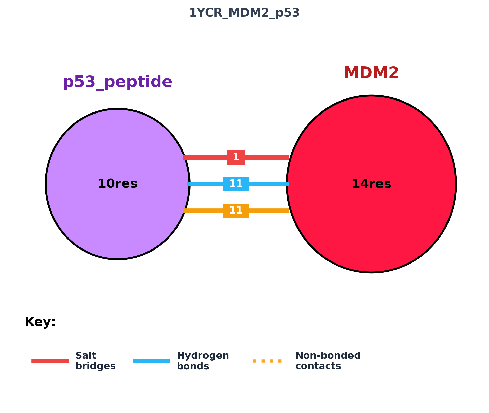
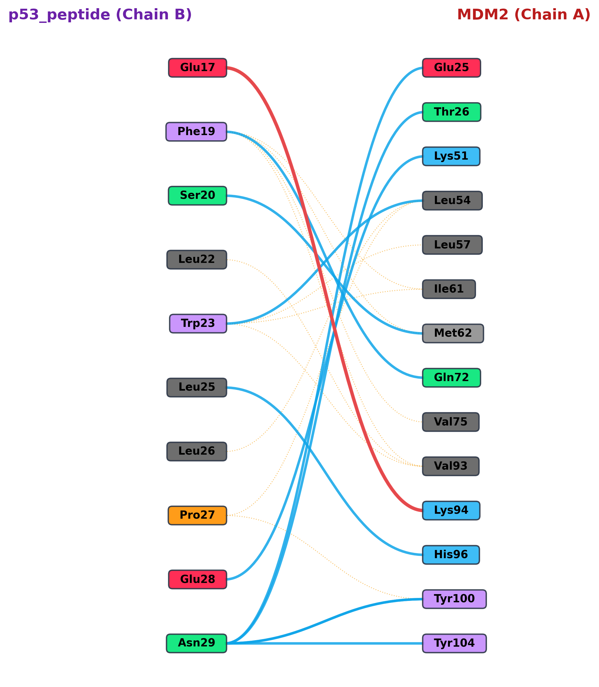
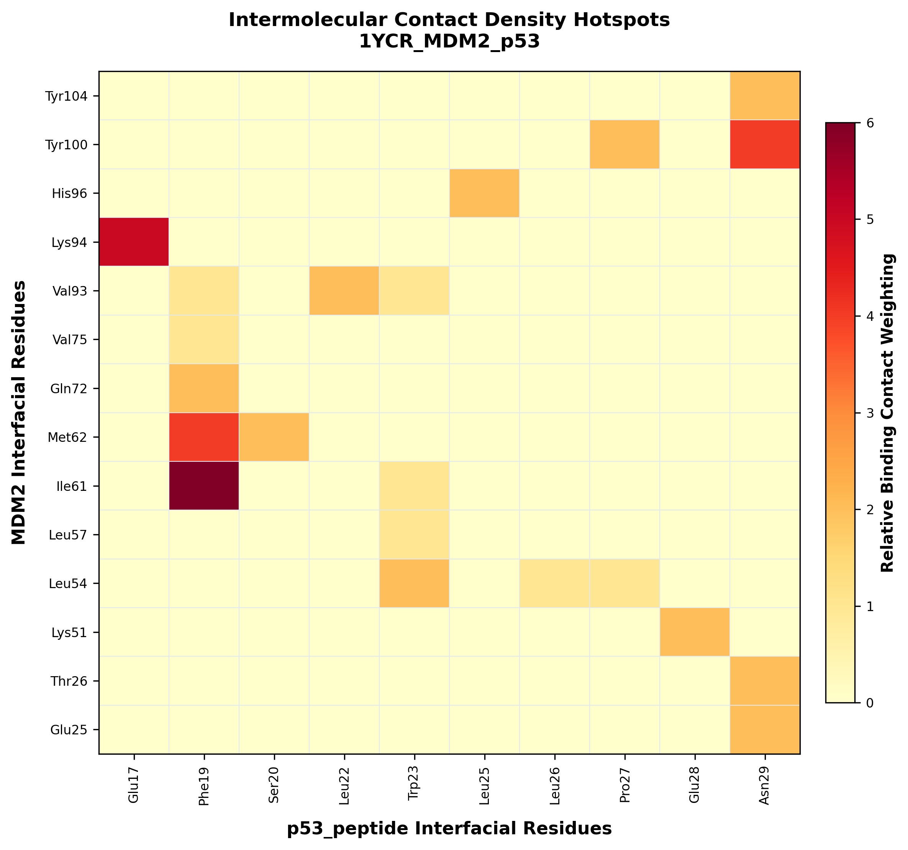
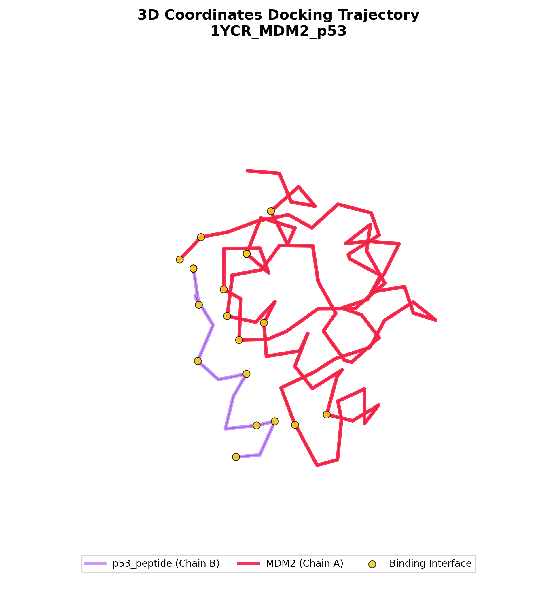
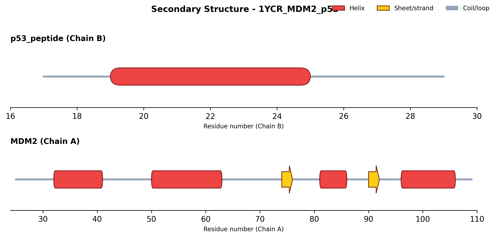
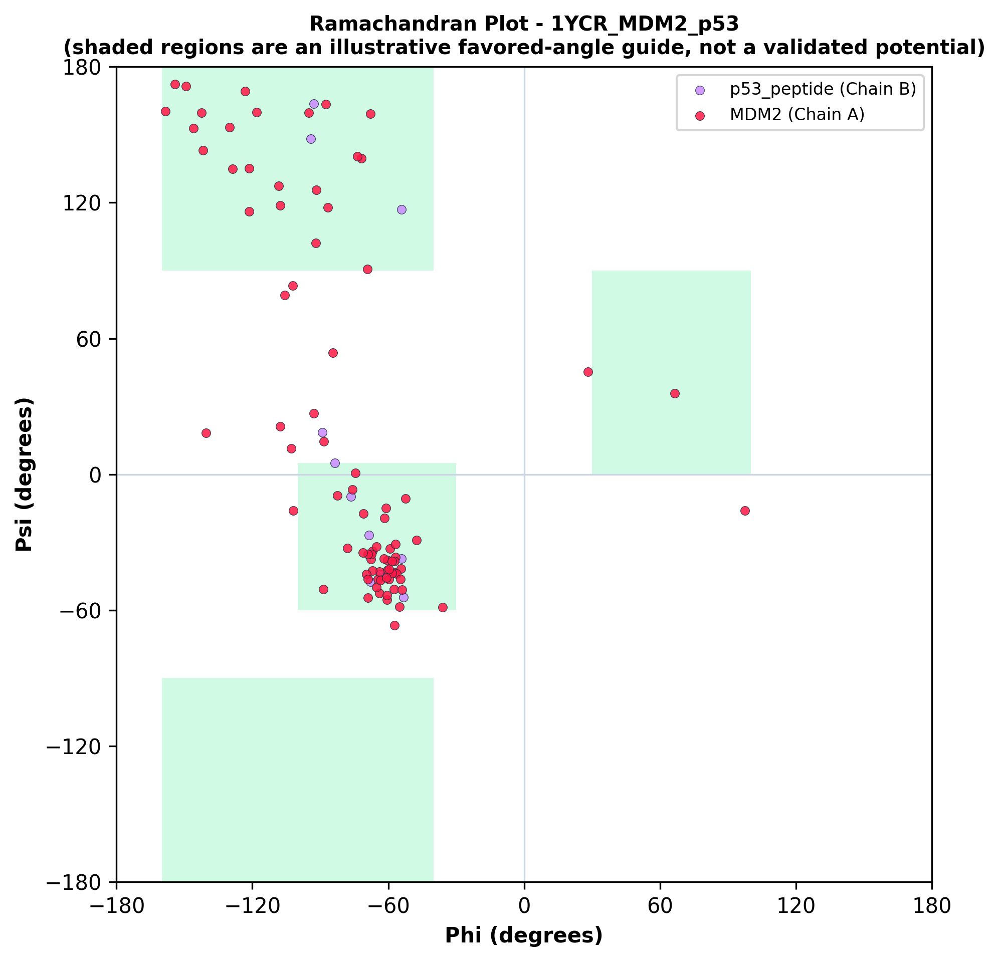

Give it any two-chain PDB file — a docked peptide, an antibody-antigen pair, an AMP against its target — and it finds every hydrogen bond, salt bridge, and hydrophobic contact between them, then draws the interface, the secondary structure, and a Ramachandran plot. No Biopython, no PDBsum server required.
ATOM 723 N PHE B 19 32.143 -27.542 -11.625 1.00 22.45 N ATOM 727 CB PHE B 19 32.674 -25.245 -10.916 1.00 12.04 Chydrophobic · Met62 ATOM 756 CA TRP B 23 27.021 -24.553 -7.803 1.00 20.10 C ATOM 764 NE1 TRP B 23 26.659 -20.002 -7.892 1.00 8.62 Nh-bond · 2.83Å · Leu54 ATOM 811 N ASN B 29 16.925 -19.172 -2.791 1.00 37.74 N ATOM 711 OE1 GLU B 17 32.302 -32.543 -7.098 1.00 60.54 Osalt bridge · 3.40Å · Lys94
Every contact is geometry, not a black box — distances are checked directly against the coordinates in your file.
Polar atom pairs (N/O/S) positioned close enough to plausibly hydrogen-bond.
2.4–3.5 ÅOppositely charged side-chain atoms (Asp/Glu against Lys/Arg/His) within range.
≤ 4.0 ÅNon-polar carbon atoms from hydrophobic residues packed against each other.
≤ 4.0 ÅGenerated by running the script, unmodified, on PDB entry 1YCR — MDM2's binding domain (chain A) with a 15-residue p53 peptide (chain B) docked into it, chosen because it mirrors a short-peptide-vs-target case.






Plus a full text report and an interactive docked_complex_3d.html viewer — see examples/ for all of it, including the raw report text.
Download the project, install two libraries, then answer plain-English questions.
python src/easy_start.py
Read the full walkthrough →
Fetch a structure by PDB ID or upload your own, run everything in the browser, download a zip of results.
Open notebooks/PDBsum_Interface_Analyzer_Colab.ipynb
Launch in Colab →
Full control: explicit chains, batch mode across a whole folder, custom labels.
python src/pdb_interface_analyzer.py complex.pdb \
--ligand-chain B --receptor-chain A
See all options →